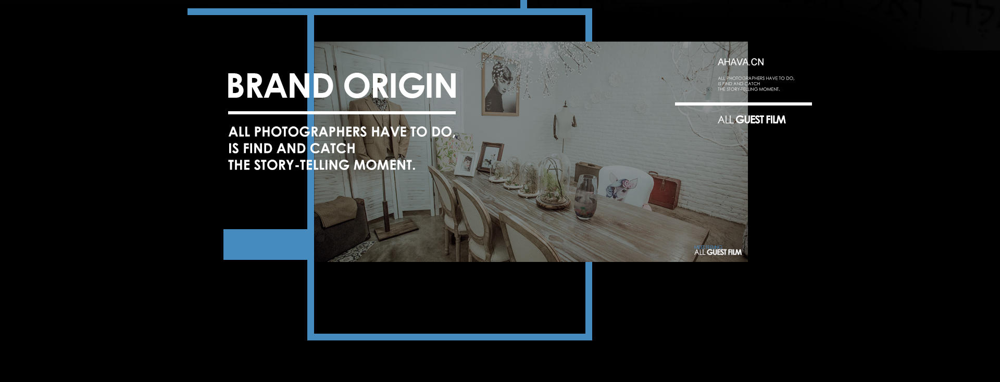
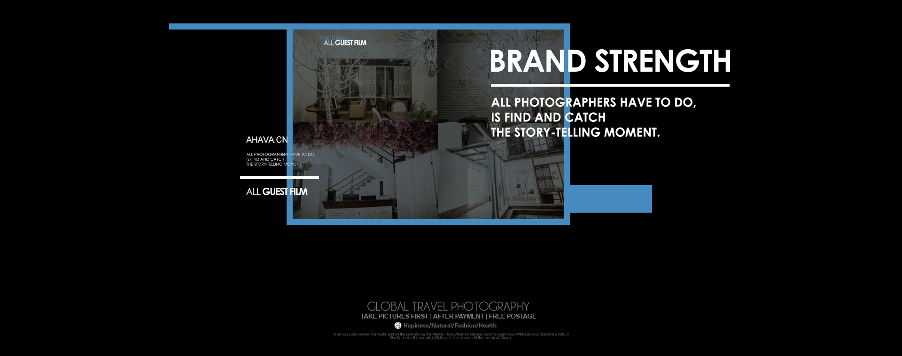

神用六天创造了一切，第七天世界出现了爱。给时间一点时间让幸福发生，你看见你想看见的，并将它定格为永恒。 遇见菲林--您的私人定制影像专家，追逐幸福从选择开始。
品牌精神
从创立遇见菲林以来，打破了原本对于婚照的字面理解，我们专注于倾听，还原爱情的画面 ，用一次次的快门声就像幸福在敲门，拍摄更像一场爱的旅程，这也是之所以遇见菲林一直专注 于如何更了解客户，给的再多不如懂你。

品牌起源
我们一直追寻“遥远的相似性”，就像量子力学里的量子纠缠，两个粒子在经过短暂时间彼此相遇之后， 无论相距再遥远，其中一个粒子受干扰发生变化，遥远空间外另一个粒子也会发生变化。 相似性应用于 爱情论题里时，就像是在茫茫宇宙中有了陪伴的感动，不愿让你孤单。抛开技术的堆叠、繁琐的修饰、模式化的范本 ，我们需要你们的想法和情感的呈现，来找到找到我们对于之间的“相似性”并运用贯彻整个服务过程中来， 打造你的专属拍摄体验。

品牌实力
全球旅拍高端定制旅拍摄影品牌，致力于为80、90后提供专业的婚照服务。 天生的完美主义者团队秉持寻找“相似性”的摄影理念，在倾听和了解更多新人的想法 与诉求的基础上，以热忱、优质、高效、创新的工作态度，精益求精的服务质量，得到愈 来愈多的新人认可。众口相传的口碑与支持，成为推动我们不断努力前进的力量。 摒弃固有的拍摄风格，不模仿，不盲从，选择最大程度的还原照片本身的情绪， 用镜头去讲述故事，独家研发拍制全新旅拍风格，使旅拍市场风格变得多元化， 注入浪漫的新活力，开启菲林风格新纪元。 不是每一次遇见，都叫遇见菲林。